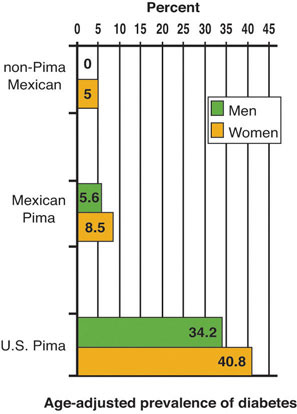

In addition to nutrition, health is affected by genetics, the environment, life cycle, and lifestyle. These factors are referred to as “determinants” of health and they all interact with each other. For example, family income influences the food choices available and the quantity and quality of food that can be purchased, which of course affects nutrition. Except for nutrition and lifestyle, these factors can be difficult or impossible to change.
Everyone starts out in life with the genes handed down to them from the families of their mother and father. GenesThe sequences of DNA that code for all the proteins in your body. are responsible for your many traits as an individual and are defined as the sequences of DNA that code for all the proteins in your body. The expression of different genes can determine the color of your hair, skin, and eyes, and even if you are more likely to be fat or thin and if you have an increased risk for a certain disease. The sequence of DNA that makes up your genes determines your genetic makeup, also called your genomeEntire genetic information contained in an individual which is inherited from their parents., which is inherited from your mother and father. In 2003, the Human Genome Project was completed and now the entire sequence of DNA in humans is known. It consists of about three billion individual units and contains between twenty-five and thirty thousand genes. The human genome that was sequenced was taken from a small population of donors and is used as a reference DNA sequence for the entire population. Each of us has a similar but unique DNA sequence. Only identical twins and cloned animals have the exact same DNA sequence.
Now that we understand the map of the human genome, let’s enter the fields of nutrigenomics and epigenetics. Recall that nutrigenomicsAn emerging scientific discipline that studies how nutrients affect gene expression. is an emerging scientific discipline aimed at defining healthy genes and not-so-healthy genes and how nutrients affect them. Currently, scientists cannot change a person’s DNA sequence. But they have discovered that chemical reactions in the body can turn genes “on” and “off,” causing changes in the amounts and types of proteins expressed. EpigeneticsA rapidly advancing scientific field, in which researchers study how non-gene factors affect gene expression. is another rapidly advancing scientific field in which researchers study how chemical reactions turn genes “on” and “off” and the factors that influence the chemical reactions. Some of these factors are now known to be nutrients. Researchers at the Genetic Science Learning Center at the University of Utah conducted an experiment in which some pregnant mice were fed a diet containing folate, choline, vitamin B12, and betaine, and other pregnant mice were fed a diet that did not contain these nutrients and chemicals. Both groups of pregnant mice were also fed bisphenol A, a chemical in plastic, which alters DNA by inhibiting a specific chemical reaction. The mice born from the mother fed the supplemented diet were brown, thin, and healthy. The mice born from the mother fed the unsupplemented diet were yellow, fat, and unhealthy. This is a dramatic example of how nutrients change not the sequence of DNA, but which genes are expressed. These two mice look different, but have identical DNA sequences. Thus, not only do the things you eat determine your health, but so do the things your mother ate during pregnancy. Moreover, other studies have demonstrated what your dad ate—and what your grandmother ate while she was pregnant with your mother!—also can affect your gene expression and, consequently, your health. Does this make it OK for you to blame your mother and father for all of your shortcomings? No. Genetics are important in determining your health, but they are certainly not the only determinant.
This is a good animation of the central foundation of modern biology. Turn “on” a gene, make messenger RNA, and make protein. Spin the dial all the way to the left to turn off the expression, and then slowly move it to the right.
http://learn.genetics.utah.edu/content/epigenetics/control/
Source: Genetic Science Learning Center at the University of Utah.
Diet during Pregnancy
(click to see video)Watch as Jen discovers how what you eat during pregnancy affects the health of your baby.
The life cycleThe stages of life one passes through until death. of human beings originates from a fertilized egg, which develops into a fetus that is eventually born as a baby. A baby develops into a child, transitions through the wonderful phase of adolescence, becomes an adult, and then advances into old age and eventually death (Figure 1.6 "The Life Cycle: The Forward March to Old Age and Ultimately Death"). The current average life expectancy in America is approaching eighty. To see how this compares with other countries, see Note 1.39 "Interactive 1.3".
Visit this public database from the World Bank to learn how the life expectancy in America differs from those in other countries.
A person’s stage of life influences their health and nutritional requirements. For example, when you are an adolescent, your bones grow quickly. More calcium, a bone-building nutrient, is required in the diet during this life stage than at other ages. As you get older, the aging process affects how your body functions. One effect of aging, apparently earlier in women than in men, is the deterioration of bone tissue. As a result, women over age fifty-one need more calcium in their diet than younger adult women. Another life-cycle stage, pregnancy, requires several adjustments to nutrition compared to nonpregnant women. It is recommended that a pregnant woman consume more protein than a nonpregnant woman to support growth and development, and to consume more of some vitamins, such as folate, to prevent certain birth defects. The USDA provides information on healthy diets for many different stages of the life cycle on their website. Healthy aging requires eating a diet that matches one’s life stages to support the body’s specific physiological requirements. What else is known to help a person age slowly and gracefully? Diets high in vegetables and fruits are associated with increased longevity and a decreased risk of many diseases.
Your environment has a large influence on your health, genetics, life cycle, and lifestyle. Scientists say that the majority of your expressed traits are a product of your genes and environment, of which nutrition is a component. An example of this interaction can be observed in people who have the rare genetic disorder, phenylketonuria (PKU). The clinical signs of PKU are mental retardation, brain damage, and seizures and are caused by the build-up of the amino acid phenylalanine and its metabolites (breakdown products produced during metabolism) in the body. The high level of phenylalanine in a person who has PKU is the result of a change in the gene that encodes for an enzyme that converts phenylalanine into the amino acid tyrosine. This genetic change, called a mutation, causes the enzyme to not function properly. In this country and many others all newborn babies are screened for PKU in order to diagnose and treat the disease before the development of mental retardation and brain damage. Once diagnosed, PKU is treated by strict adherence to a diet low in phenylalanine, consisting mostly of fruits, vegetables, and grains. Adhering to this diet for life allows an individual with PKU to lead a normal life without suffering the consequences of brain damage, mental retardation, or seizures. In the example of PKU, the consequences of a genetic mutation are modified by diet. Thus, a person’s genes can make them more susceptible to a particular disease, or cause a disease, and their environment can decrease or increase the progression and severity of the condition.
Multiple aspects of a person’s environment can affect nutrition, which in turn affects health. One of the best environmental predictors of a population’s health is socioeconomic status. Socioeconomic statusA measurement dependent on three variables; income, occupation, and education. is a measurement made up of three variables: income, occupation, and education. Socioeconomic status affects nutrition by influencing what foods you can afford and consequently, food choice and food quality. Nutrition and health are generally better in populations that have higher incomes, better jobs, and more education. On the other hand, the burden of disease is highest in the most disadvantaged populations. A commentary in the Journal of the American Medical Association reports that the lower life expectancy of populations of lower socioeconomic status is largely attributable to increased death from heart disease.Fiscella, K. and D. Tancredi. “Socioeconomic Status and Coronary Heart Disease Risk Prediction.” JAMA 300, no. 22 (2008): 2666–68. The American Heart Association states that having a healthy diet is one of the best weapons to fight heart disease and it is therefore essential that all socioeconomic status groups have access to high-quality, nutrient-dense foods. The disparities in nutrition and health in America are directly related to the disparity in socioeconomic status. Other dimensions that affect health disparity are race, ethnic group, sex, sexual identity, age, disability, and geographic location. The issue of inequitable health among Americans is recognized by the federal government and one of the overarching goals of Healthy People 2020, a large program managed by the HHS, is to “Achieve health equity, eliminate disparities, and improve the health of all groups.” To work toward this monumentous goal, the HHS is actively tracking disease patterns, chronic conditions, and death rates among the many different types of people that live in the United States. This will be further discussed in Chapter 2 "Achieving a Healthy Diet".
To see the differences in causes of death for different sexes, races, and age groups, visit the website of Healthy People and compare the top ten causes of death for different populations.
One facet of lifestyle is your dietary habits. Recall that we discussed briefly how nutrition affects health. A greater discussion of this will follow in subsequent chapters in this book as there is an enormous amount of information regarding this aspect of lifestyle. Dietary habits include what a person eats, how much a person eats during a meal, how frequently meals are consumed, and how often a person eats out at restaurants. Other aspects of lifestyleComponents of lifestyle are dietary habits, physical activity level, recreational drug use, and sleeping patterns, all of which play a role in health and impact nutrition. include physical activity level, recreational drug use, and sleeping patterns, all of which play a role in health and impact nutrition. Following a healthy lifestyle improves your overall health.
In 2008, the HHS released the Physical Activity Guidelines for Americans. The HHS states that “Being physically active is one of the most important steps that Americans of all ages can take to improve their health. The 2008 Physical Activity Guidelines for Americans provides science-based guidance to help Americans aged six and older improve their health through appropriate physical activity.” The guidelines recommend exercise programs for people in many different stages of their lifecycle and for pregnant women and adults and children who have disabilities. The HHS reports that there is strong evidence that increased physical activity decreases the risk of early death, heart disease, stroke, Type 2 diabetes, high blood pressure, and certain cancers; prevents weight gain and falls; and improves cognitive function in the elderly. Also unveiled recently are the Canadian Physical Activity Guidelines, which are available at the website of The Canadian Society for Exercise Physiology (http://www.csep.ca/english/view.asp?x=804).
Go to the HHS website to access the entire 2008 Physical Activity Guidelines for Americans.
Recreational drug use, which includes tobacco-smoking and alcohol consumption along with narcotic and other illegal drug use, has a large impact on health. Smoking cigarettes causes lung cancer, eleven other types of cancer, heart disease, and several other disorders or diseases that markedly decrease quality of life and increase mortality. In the United States, smoking causes more than four hundred thousand deaths every single year, which is far more than deaths associated with any other lifestyle component.Centers for Disease Control and Prevention. “Smoking and Tobacco Use.” Last updated March 21, 2011. http://www.cdc.gov/tobacco/data_statistics/fact_sheets/health_effects/tobacco_related_mortality/index.htm Also, according to the CDC, excessive alcohol intake causes an estimated seventy-five thousand deaths per year.Centers for Disease Control and Prevention. “Alcohol and Drug Use.” Last updated June 7, 2012. http://www.cdc.gov/healthyyouth/alcoholdrug/ Staying away from excessive alcohol intake lowers blood pressure, the risk from injury, heart disease, stroke, liver problems, and some types of cancer. Abstaining from alcohol also aids in weight loss and increases the money in your wallet. While heavy drinking of alcoholic beverages is associated with several bad health effects, consuming alcohol in moderation has been found to promote health such as reducing the risk for heart disease and Type 2 diabetes in some people. The HHS defines drinking in moderation as no more than one drink a day for women and two drinks a day for men.
Illicit and prescription drug abuse are associated with decreased health and is a prominent problem in the United States. The health effects of drug abuse can be far-reaching including increased risk for stroke, heart disease, cancer, lung disease, and liver disease.
Inadequate amounts of sleep, or not sleeping well, can also have remarkable effects on a person’s health. In fact, sleeping can affect your health just as much as diet or exercise. At least 10 percent of Americans have chronic insomnia.National Sleep Foundation. “Can’t Sleep? What to Know about Insomnia.” Accessed February 12, 2012. http://www.sleepfoundation.org/article/sleep-related-problems/insomnia-and-sleep. Scientific studies have shown that insufficient sleep increases the risk for heart disease, Type 2 diabetes, obesity, and depression. Abnormal breathing during sleep, a condition called sleep apnea, is also linked to an increased risk for chronic disease.
Go to the HHS website and discover the many tools at your fingertips to live a healthier lifestyle.
The Pima Indians who inhabit parts of southern Arizona and the Pima Indians that live across the border in Mexico are genetically and culturally similar, but there are vast differences in the health of these two populations. In America, the Pima Indians have the highest rate of obesity and Type 2 diabetes compared to any other ethnic group. However, the Pima Indians who live in Mexico do not share these same health problems because of a complex interplay between nutrition, genetics, environment, and lifestyle. Over one hundred years ago, the Pima Indians were farmers, hunters, and gatherers and their diets consisted of about 70 percent carbohydrate, 15 percent protein, and 10 to 15 percent fat. Typical of the lives of farmers, hunters, and gatherers a century ago, they lived through times of feast and times of famine. The geneticist James Neel proposed in 1962 that the Pima Indians carried a “thrifty gene” that makes them very efficient at storing fat during times of plenty so they do not starve when food is scarce.
After World War II, the Pima Indians in America either went back to reservations in southern Arizona or moved to the cities for work. They rapidly adopted the American diet and lifestyle and consumed high-fat, processed foods and refined grains and were more sedentary than their counterparts in Mexico, who retained their more traditional diet and lifestyle. Today, the typical American Pima Indian diet obtains more than 40 percent of calories from fat. The “thrifty gene” in the American Pima Indian population increased their susceptibility to the consequences of the high-fat American diet and sedentary lifestyle because they were genetically better at storing fat than others. The story of the Pima Indians and the difference between the health of their populations in America and Mexico demonstrates the interactions between nutrition, genetics, environment, and lifestyle. Indeed, preliminary studies suggest that when American Pima Indians switch back to the diets of their ancestors and consume beans, corn, grains, and greens and other low-fat, high-fiber plant foods, the benefits are weight loss and reduced risk of chronic disease. The health status of American Pima Indians is considered “a canary in the coal mine, ” meaning they provide a warning to the American people.
Although the health consequences of the American diet and lifestyle in Pima Indians appeared rapidly in their population, all Americans that partake in the current trends of American diet and lifestyle are at risk. On the lighter side (literally!), the new studies that show changing back to more traditional diets markedly improved the health of the American Pima Indians suggest that all Americans can reduce their risk for diet-related diseases even when their genetic susceptibility for these diseases is high.
Figure 1.7 The Interplay of Nutrition, Genetics, Environment, and Lifestyle Affects Health
Pima Indians living in America are genetically similar to those who live in Mexico, but differences in their nutrition, environment, and lifestyle changes their health.
Heed the warning of the Pima Indians and seek out ways to establish a more traditional dietary pattern. The American diet in the nineteenth century consisted of less meat, less processed food, and more home-grown fruits, vegetables, and whole grains. Think of ways to include these types of foods in your diet or partake in some of the traditional foods of a particular ethnic group in your community. Visit the following websites to find out the unique foods of some traditional diets.
Traditional Mediterranean diet: http://www.oldwayspt.org/mediterraneandiet
Native Tech: http://www.nativetech.org/recipes/index.php
Traditional foods, with recipes, by country: http://www.foodbycountry.com/index.html
From visiting websites about traditional foods of different cultures and ethnic groups, you may have noticed that a few more things besides environment and lifestyle that influence the foods you choose to eat. Different foods affect energy level, mood, how much is eaten, how long before you eat again, and if cravings are satisfied. We have talked about some of the physical effects of food on your body, but there are other effects too. Food regulates your appetite and how you feel. Multiple studies have demonstrated that some high-fiber foods and high-protein foods decrease appetite by slowing the digestive process and prolonging the feeling of being full. The effects of individual foods and nutrients on mood are not backed by consistent scientific evidence, but in general most studies support that healthier diets are associated with a decrease in depression and improved well-being. To date, science has not been able to track the exact path in the brain that occurs in response to eating a particular food, but it is quite clear that foods, in general, stimulate emotional responses in people.
Food also has psychological, cultural, and religious significance, so your personal choices of food affect your body, mind, and soul. The social implications of food have a great deal to do with what people eat, as well as how and when. Special events in individual lives—from birthdays to funerals—are commemorated with equally special foods. Being aware of these forces can help people make healthier food choices—and still honor the traditions and ties they hold dear. Typically, eating kosher food means a person is Jewish; eating fish on Fridays during Lent means a person is Catholic; fasting during the ninth month of the Islamic calendar means a person is Muslim. On New Year’s Day, people from New England like to combine pork and sauerkraut as a way to eat their way to luck. Several hundred miles away in the southern United States, people eat Hoppin’ John, a favorite local dish made with black-eyed peas and pork, while fish is the “lucky” food of choice for Japanese Americans. National food traditions are carried to other countries when people immigrate. American cuisine would not be what it is today without the contributions of Italian, Chinese, Mexican, and other immigrants.
Along with these influences, a number of other factors affect the dietary choices individuals make, including:
In this section, you discovered that there are many determinants that affect your health status. You can change some of them and others you cannot. All the determinants of health interact together in influencing your health.